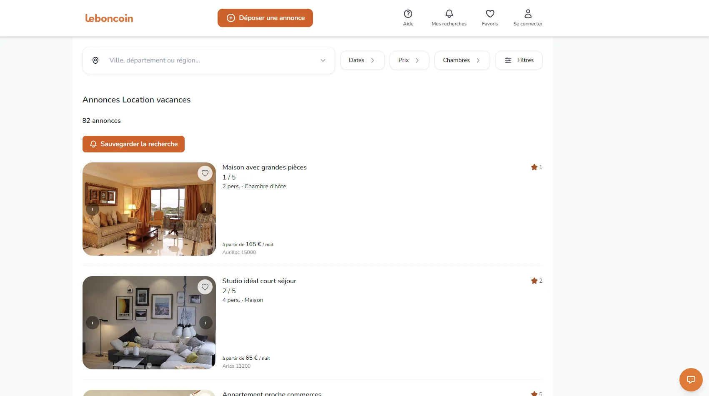
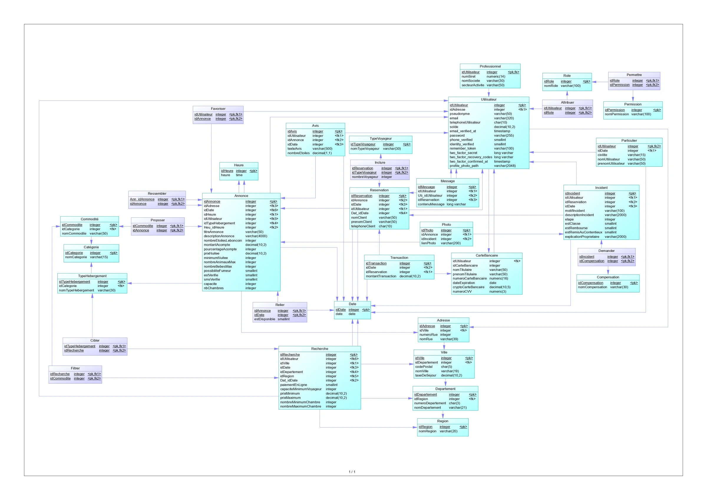
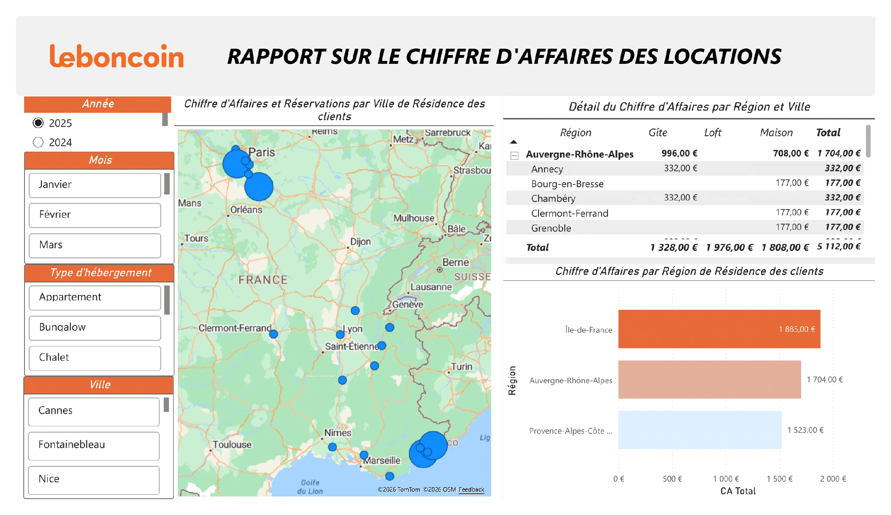

Merise
Merise
Conception du MCD, du MLD et d'un MPD de plus de 30 tables.
CDM, LDM and a physical model with more than 30 tables.
Concevoir en équipe une plateforme de location de vacances, de la modélisation métier à l'application Laravel et au reporting Power BI.
Design a vacation rental platform as a team, from business modeling to the Laravel application and Power BI reporting.

Interface de la plateforme de location développée avec Laravel.
Vacation rental platform interface developed with Laravel.

Structure PostgreSQL détaillée avec clés et contraintes.
Detailed PostgreSQL structure with keys and constraints.

Gestion d'un incident et d'un remboursement.
Incident and refund management.

Suivi du chiffre d'affaires par hébergement et propriétaire.
Revenue tracking by accommodation and owner.

Répartition du chiffre d'affaires par région et ville.
Revenue distribution by region and city.
Modéliser un domaine métier riche avant de construire une application capable de gérer locations, utilisateurs, incidents et indicateurs financiers.
Model a rich business domain before building an application able to manage rentals, users, incidents and financial indicators.
La plateforme devait couvrir les parcours locataire et propriétaire, avec réservations, paiements, incidents et remboursements.
The platform had to cover tenant and owner journeys, including bookings, payments, incidents and refunds.
La base opérationnelle devait aussi servir de source à un modèle décisionnel et à des tableaux de bord Power BI.
The operational database also had to feed a decision model and Power BI dashboards.
Conception du MCD, du MLD et d'un MPD de plus de 30 tables.
CDM, LDM and a physical model with more than 30 tables.
Modélisation des incidents et remboursements entre les différents acteurs.
Modeling incidents and refunds between the different stakeholders.
Développement des parcours métier et connexion à la base PostgreSQL.
Development of business workflows connected to PostgreSQL.
Schéma en étoile, mesures DAX et analyse du chiffre d'affaires.
Star schema, DAX measures and revenue analysis.
Cette SAÉ m'a appris à maintenir la cohérence entre processus, modèle de données, application et indicateurs, tout en travaillant dans une équipe de cinq.
This project taught me how to maintain consistency between processes, data model, application and indicators while working in a five-person team.